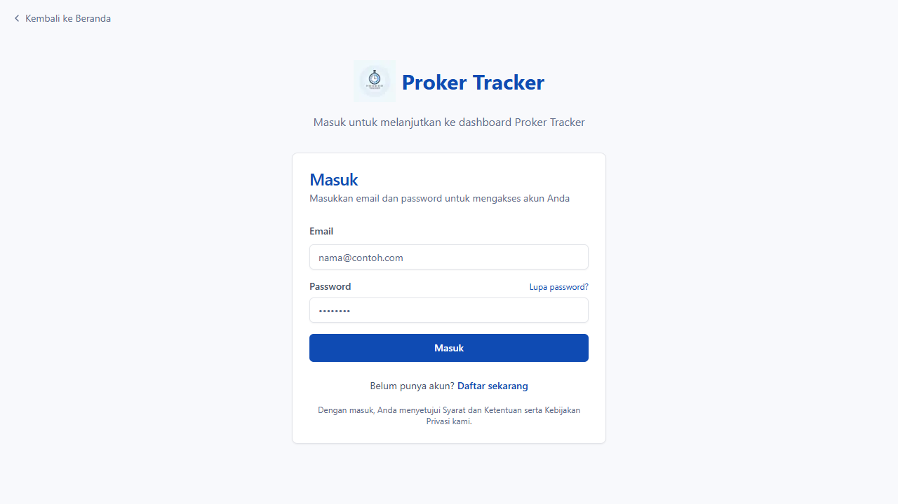
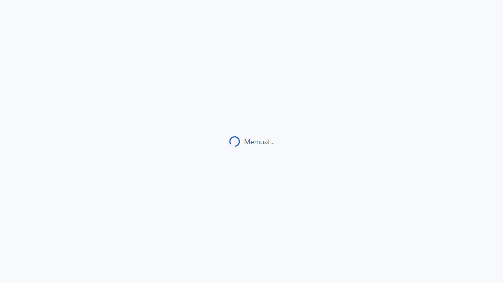

Laporan Pengujian Login Proker Tracker
BERHASIL
Tanggal & Waktu
2025-05-30 01:16:23
Langkah-langkah Pengujian
Langkah 1: Navigasi ke halaman login
Langkah 2: Memasukkan email
Langkah 3: Memasukkan password
Langkah 4: Mengklik tombol login
Langkah 5: Login berhasil
Screenshot
Screenshot 1

Screenshot 2
